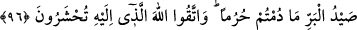

96. “Hem size, hem de yolculara bir fayda olmak üzere deniz avı ve onu yemek
size helal kılındı. İhramda olduğunuz sürece kara avı size yasaklandı. Huzurunda
toplanacağınız Allah’tan korkun.”
Âyette geçen “deniz avı” ister deniz, ister nehir, isterse göl olsun sularda avlanan
bütün canlılardır. Sadece suda yaşayabilen, eti yenen ve yenmeyen canlıların hepsi buna
dahildir. Hem denizde hem de karada yaşayan ördek, kurbağa, yengeç, kaplumbağa ve
tüm su kuşları gibi hayvanlar deniz avı kabul edilmezler. Bütün bunlar kara avıdır ve
onları ihramlıyken öldürenlerin cezâ ödemeleri gerekir.
İmam Fahreddîn Râzî der ki: Denizde avlanan canlılar üç türlüdür:
1- Balık ve bütün türleri helaldir,
2- Kurbağa ve bütün türleri haramdır,
3- Bu iki tür dışında kalanlar ise ihtilaflıdır. Ebû Hanife’ye göre haramdır. Ulemanın
çoğunluğuna göre ise âyette “deniz avı” diye genel bir ifade kullanıldığı için helaldir.”
Muhyi’s-sünne (el-Begavî) bu konuda şunları söylemektedir: “Suda yaşayan canlılar
iki kısımdır: Balıklar ve diğer canlılar. Farklı sebeplerden kaynaklanmış olsa da ölü
balık helaldir. Nitekim Peygamberimiz (s.a.) “Bize iki ölü helal kılınmıştır. Bunlar
balık ve çekirgedir.”[45] buyurmuştur. Balığın belli bir sebepten dolayı ölmüş
olmasıyla, sebepsiz olarak ölmüş olması arasında fark yoktur. Ebû Hanîfe’ye göre ölü
balık ancak taşa çarpmak ve suyun çekilmesi gibi belli bir sebepten dolayı ölmesi
durumunda helal olur.
Balığın dışında kalan diğer su canlıları iki kısıma ayrılır:
1- Kurbağa ve yengeç gibi karada da yaşayabilenler; bunları yemek haramdır.
2- Sadece suda yaşayıp karada yaşayamayanlar. Bunların yenip yenmeyeceği
ihtilaflıdır. Ebû Hanife’nin de içlerinde bulunduğu bir grup âlime göre sadece suda
yaşayabilen canlılar arasında balıklardan başkasını yemek câiz değildir.
Diğer bir grup âlim ise, su canlılarının tamamının ölüsünün helal olduğunu
söylemişlerdir. Onlara göre şekilleri farklı da olsa hepsi “balık” sınıfına dahildir.
Nitekim yılan şeklinde olduğu için “yılan balığı” denilen balığı yemek, âlimlerin
ittifakıyla helal sayılmıştır.
Âyette geçen “deniz yiyeceği”nden maksat, deniz tarafından kıyıya vurulan ya da
suyun çekilmesi sonucu karada kalan ve külfetsiz olarak alınıp istifade edilen deniz
ürünleridir.
Bu konuda Ebussuûd Efendi şöyle demiştir: “Deniz yiyeceği” demek denizde
avlananların yenilenleri size helal kılındı, demektir. Bu, genel bir ifadeden sonra gelen
tahsistir. Buna göre mânâ şöyle olur: “Sularda avlanan her çeşit canlıyı avlamak ve
onlardan istifade etmek size helal kılındı.”